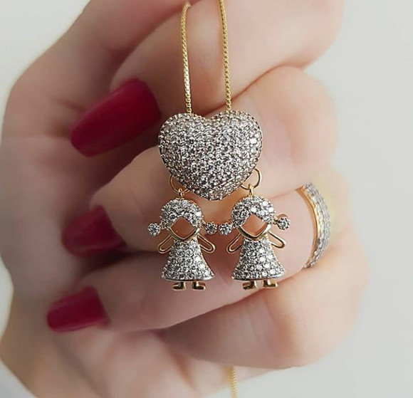
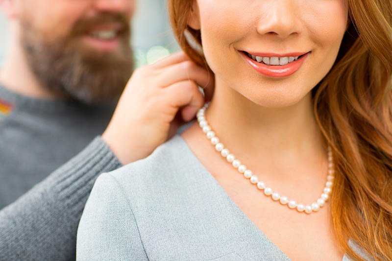
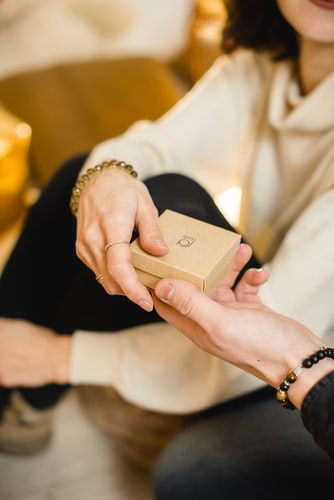
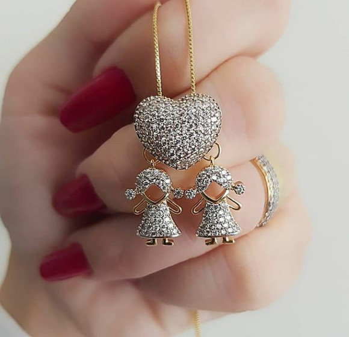
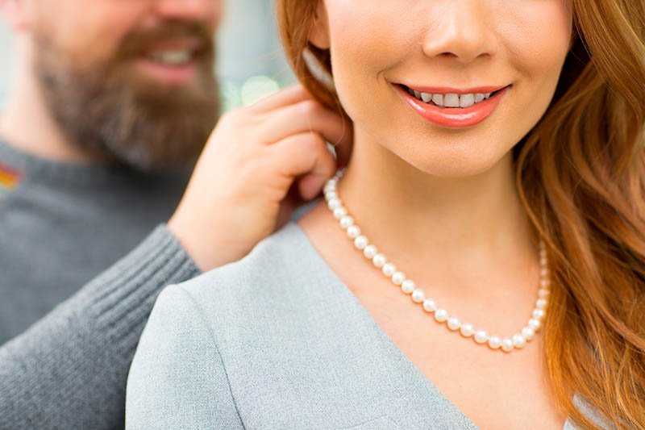
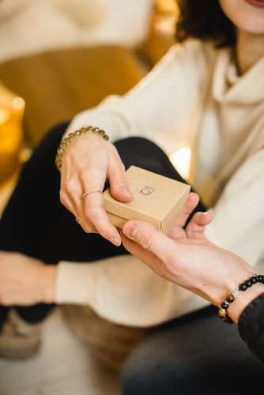

Nossa loja foi criada com o foco na transformação. A ideia de ter uma joia é muito mais que apenas possuir um bem, mas de ter uma história. Toda história transforma. Toda joia marca um momento e gera um sentimento.
Joias contam histórias...
 




